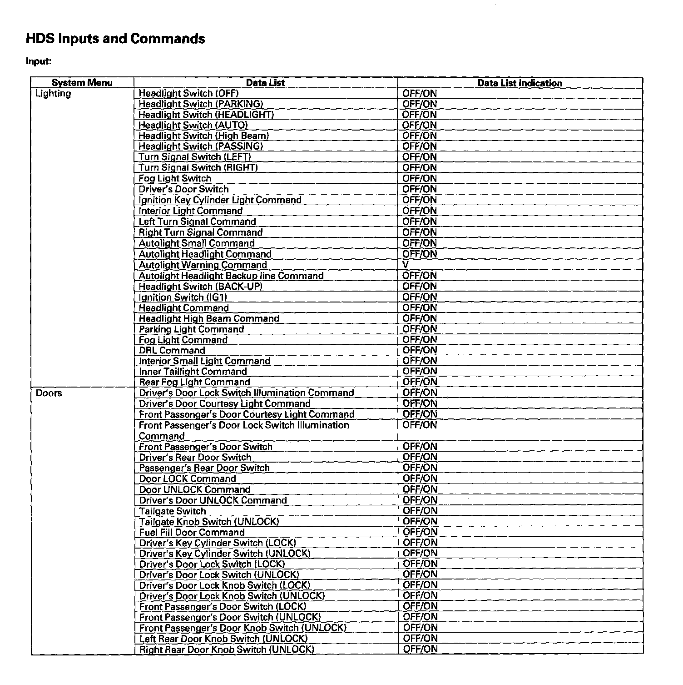

Pinout Values and Diagnostic Parameters
Multiplex Integrated Control SystemSystem Description
HDS Inputs And Output Commands - Part 1:
HDS Inputs And Output Commands - Part 2:

HDS Inputs And Output Commands - Part 3:
HDS Inputs And Output Commands - Part 4:
HDS Inputs And Output Commands - Part 5:
HDS Inputs And Output Commands - Part 6:
HDS Inputs And Output Commands - Part 7:
HDS Inputs And Output Commands - Part 8:
HDS Inputs and Commands
Certain inputs happen so quickly that the HDS can not update fast enough. Hold the switch that is being tested while monitoring the Data List.
This should give the HDS time to update the signal on the Data List.
Because the HDS software is updated to support the release for newer vehicles it is not uncommon to see system function tests that are not supported.
Make sure that the most current software is loaded.